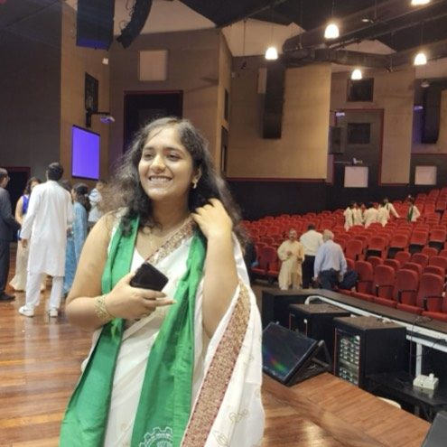
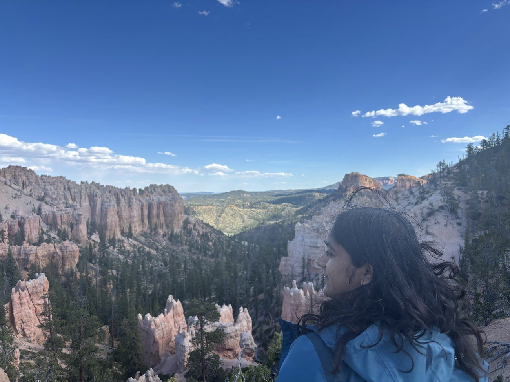
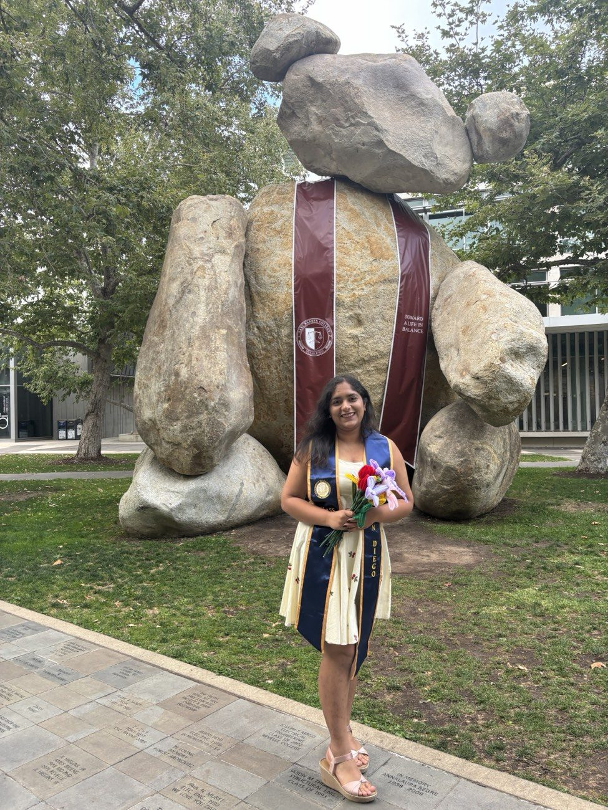

Hi, my name is
I build production-grade ML systems, from LLM-powered multi-agent simulators to hierarchical forecasting engines and neural recommendation pipelines. Currently studying at UC San Diego, focused on applied machine learning, NLP, and business analytics.
a little about me
I'm a Data Scientist and ML Engineer who cares about the part after the model is built, does it actually change a decision? Does it hold up in production? Can someone who isn't me understand why it worked?
I did my undergrad at IIT Bombay before moving to UC San Diego for my Master's. Along the way I've worked as an Advanced Analytics & ML Intern at BeOne Medicines, building HCP scoring pipelines and KOL influence networks over biomedical data, and as a Data Scientist Intern at American Express, building propensity models over millions of cardmember records.
My background spans both the technical and the business side: I've worked on targeting and segmentation problems in commercial analytics, built recommendation and ranking systems, and explored LLM-based multi-agent setups. Across all of it, the through-line is the same, get the methodology right, make the output interpretable, and tie it back to something that matters.
I'm drawn to problems where the data is messy, the stakes are real, and the answer isn't just a number on a leaderboard.
Here are some technologies I work with frequently:

outside the notebook
When I'm not training models or untangling a pipeline, I'm usually somewhere with a view, chasing sunsets, hiking trails, and celebrating the milestones along the way.


what I've built
Featured Project
A multi-agent LLM simulator for The Resistance: Avalon, studying how language-model agents reason under hidden information, deception, and partial observability. Each agent receives a private role, participates in discussion, proposes teams, votes, and performs endgame assassination, all driven by LLMs. A rigorous testbed for emergent deceptive reasoning in language models.
Forecasting retail sales across a 4-level hierarchy (Total → Department → Category → 30 Products). Compares ARIMA, Prophet, LSTM. Implements MinTrace-WLS reconciliation (Wickramasuriya et al. 2019), recovering LSTM accuracy by 3.5% over unreconciled baselines and 31% over OLS MinTrace.
what's next
I'm currently open to new opportunities, full-time roles, research collaborations, or interesting projects. Whether you have a question or just want to say hi, my inbox is always open.